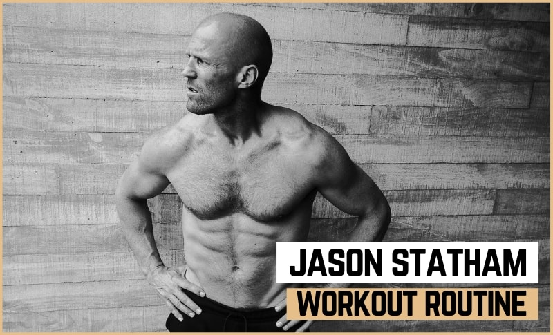

Программа тренировок любимца публики Джейсона Стетхема значительно отличается от тех, которые нынче популярны в фитнеcс-кругах. Она расписана на 6 дней недели. И на каждый из этих дней распространяется список железных правил актера.
«Безнадёжно — это когда на крышку гроба падает земля. Остальное можно исправить. Характер — это главное!».
Джейсон Стетхем
Например, он никогда не повторяет одно и то же упражнение дважды за весь шестидневный цикл. А еще в обязательном порядке все записывает: веса, повторы и даже время, потраченное на выполнение упражнения. Это позволяет Джейсону анализировать стоит ли увеличивать или, наоборот, уменьшать интенсивность занятий и используемые веса.
«Если вы хотите стать быстрее, сильнее и здоровее, то должны отслеживать свой прогресс. – делится своими мыслями актер, - Понимание прогресса в упражнениях – это, пожалуй, главная цель любой моей тренировки».
Джейсон Стетхем
Обязательным элементом каждой тренировки Стетхем считает упражнения с использованием мышц-стабилизаторов (мышцы «кора»). Ведь именно они являются основой сильной и крепкой спины. Актер на регулярной основе выполняет минимум 500 вариантов прыжков, приседаний, планок и подъемов ног.
Среди прочих упражнений, в каждой тренировке обязательно присутствуют элементы смешанных единоборств – отработка ударов по груше и мешкам с песком ногами и руками, бой с тенью, удары в прыжке и т.д. Именно они позволяют Джейсону Стетхему разогревать мышцы и поддерживать тонус тренировки.
«Могучие мышцы хороши, чтобы красоваться перед зеркалом. Мне нужно тело, чтобы бегать, плавать и драться».
Джейсон Стетхем
Секретным ингредиентом «взрывной» тренировки Джейсон Стетхем считает плиометрические упражнения – короткие, но весьма тяжелые комплексы. Джейсон традиционно начинает тренировку с прыжков на скакалке, после приступает к бурпи и «выпрыгиваниям» (squat thrusts), а затем начинает выполнять отжимания, запрыгивания на скамью, прыжки с махами рук в стороны и прыжки с обхватом ног.
«Ключ к упражнениям – «взрывное» исполнение. Например, во время отжиманий я очень медленно опускаю тело, а затем – бах! – резко выпрямляю руки».
Джейсон Стетхем